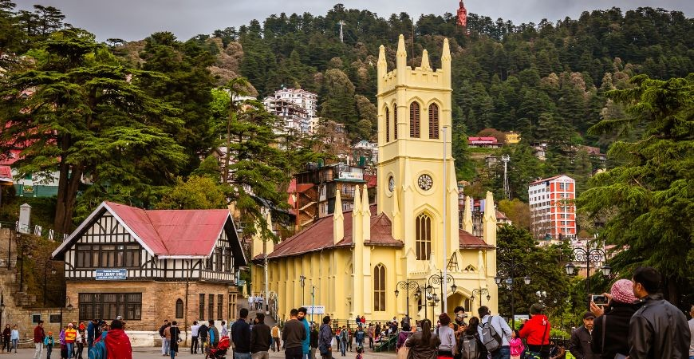
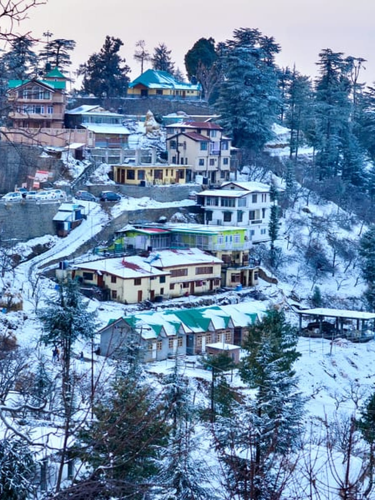

Shimla also known as Simla, the official name until 1972 is the capital and the largest city of the northern Indian state of Himachal Pradesh. In 1864, Shimla was declared as the summer capital of British India. After independence, the city became the capital of East Punjab and was later made the capital city of Himachal Pradesh. It is the principal commercial, cultural, and educational center of the state.
of the area occupied by present-day Shimla city was dense forest during the 18th century. The only sign of civilization was the Jakhu Temple and a few scattered houses. The area was called 'Shimla', named after a Hindu goddess, Shyamala Devi, an incarnation of Kali.
|  |  |
|